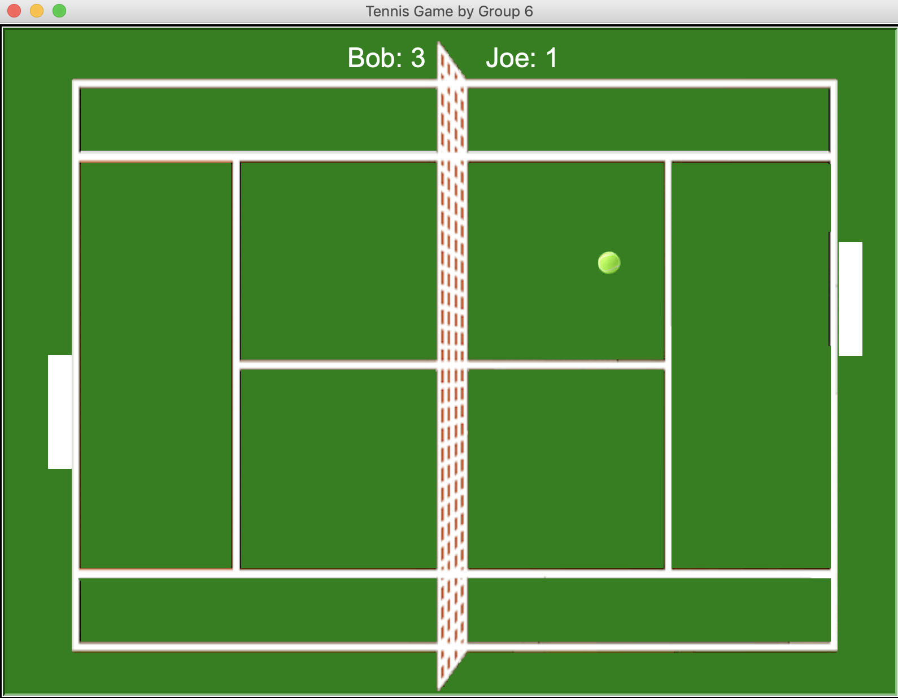

1.1.9 PLTW Project (Space Vanquishers)

This was our project. You are traveling through space but there are aliens in your way. The objective of the game is to shoot down as many aliens as possible. Move the ship using the WASD keys and press space to fire. You get a point for every alien hit, but avoid hitting satellites: those are minus one point for every time you hit them! The objects explode upon getting hit. Your score is displayed in the top left and the game is stopped when the aliens hit your ship or reach the bottom of the screen
1.2.5 PLTW Project (Pokemon Game)

This was our project. 5 Pokémon randomly generate on the screen and move around at random time intervals, disappearing and reappearing in a new location. Use the A and D keys to move Ash left and right, and the space key to throw. After the ball is successfully thrown at the Pokémon, there is about a 30% chance that it will break free, shown by a flash of light, and around a 70% chance that it will stay in the ball, which is shown by an animation of a ball closing. Afterwards, a new Pokémon generates at a new location. You have unlimited poké balls, but only thirty seconds to catch as many Pokémon as you can. You get one point for every Pokémon caught. When the game ends, the screen is cleared and a Game Over screen displays your score.
1.2.5 PLTW Project (Pokemon Game)

This was our project. It is a Tennis Game. It has two modes: single player and multiplayer. For single player, you get a point every time you hit the ball and the game ends when you let the ball go past you. You move the racket with the up/down arrows and the program prevents it from moving off the screen. Score is displayed with confetti at the end. For multiplayer mode, it first asks for the names of the two players. A player gets a point when their opponent lets the ball go past. The left player's racket is controlled with the W/S keys and the right player with the up and down arrows. When the ball goes past, it serves it to the player who got the point. Game ends when one player gets five points. Winner is displayed with confetti. The game prompts the user to choose single player or multiplayer mode in the beginning by clicking S or M.
Second day scratch project.
This was our Scratch project! It is an interactive Christmas story. Santa walks along the roof, down the chimney, to the Christmas tree, and asks you to drag the presents under the tree. After you press space to confirm, he is about to leave when the Grinch appears. You can either choose to defend the presents or do nothing. If you defend the presents, you can throw snowballs at the Grinch and if you hit him between the eyes 5 times, he will go away. Santa thanks you, and you have saved Christmas! If you do nothing, the Grinch gets away with the presents, and Santa is sad :(. An end screen appears in both choices with Christmasy music in the background.(Turn on your volume to hear the sound effects and background holiday music :))
Using App Inventor to make app game Duck Hunter.
Interactive Fiction Rags to Riches.
Black Jack game written in Python.
Modified bits in pictures.
Use data files to create graphs.
Using netlogo do remix of illusions.
Interactive Fiction Rags to Riches.